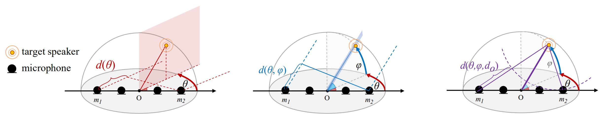
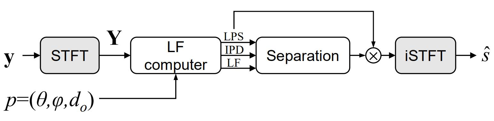

|

|
|||
|---|---|---|---|
|
|
|||
3D Spatial Features for Multi-channel Target Speech Separation
Abstract: The use of speaker's directional information for speech separation and speech recognition has demonstrated the state-of-the-art performances on multi-talker scenarios. One major limitation of previous approaches of using speaker's directional information is the significant performance degradation when the coming directions of simultaneous speech are close. To address these challenges, this paper proposed a set of new three-dimensional (3D) spatial features for target speech separation, by leveraging all the 3D location information of the target speaker, including azimuth, elevation, and the distance to the microphone array center. Previous works in this area are extended in two important directions. First, the traditional 1D directional features are generalized to 3D spatial features. Thus more discriminative spatial diversity between speakers is achieved. Second, to unleash the full power of these 3D spatial features, a microphone pair-wise attention model is also proposed. The proposed features and models were evaluated on both simulated reverberant datasets and real recordings under near and far-field conditions. Experimental results show that both proposed 3D spatial features and attention models can significantly improve the separation performance as well as reducing the recognition error rate.
